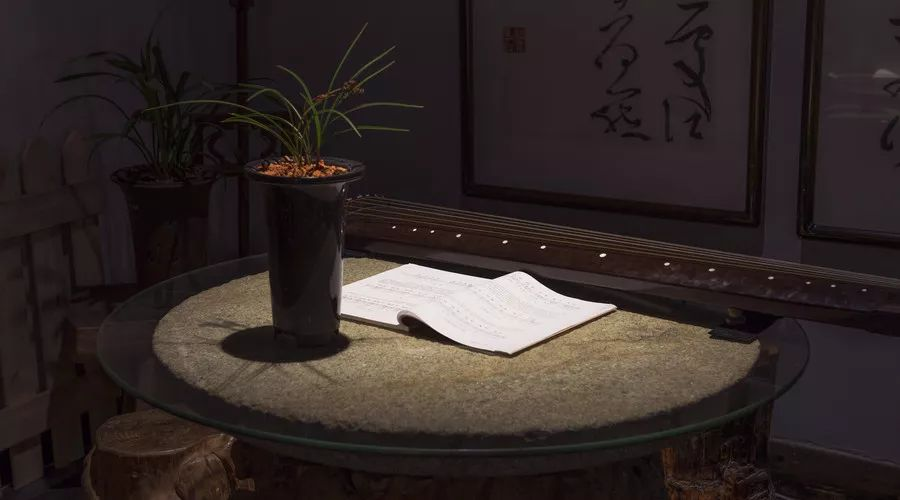

宫、商、角、徵、羽，起源于春秋时期，是中国古乐五个基本音阶，相当于西乐的Do（宫）、Re（商）、Mi（角）、Sol（徵）、La（羽）（没有Fa与Si），亦称为五音。 最早的“宫商角徵羽”的名称见于距今2600余年的春秋时期，在《管子·地员篇》中，有采用数学运算方法获得“宫、商、角、徵、羽”五个音的科学办法，这就是中国音乐史上著名的“三分损益法”。 关于五音的记载，古代典籍众多，最早出现于《左传》《尔雅》和《周礼》《礼记》《管子·地员篇》《史记·天官书》等等书籍。

|
“君臣说”
《礼记·乐礼》就曾记载：“宫为君，商为臣，角为民，徵为事，羽为物。” |
“天文说”
在五音中，“宫”音被认为是五音之首，是二十八星宿环绕的中心——“中宫”。《国语·周语下》讲道：“夫宫，音之主也，第以及羽。” |

|

|
“图腾说”有学者认为这五个音阶是因古代各大氏族的图腾所命名的。 “畜禽说”有学者认为古代“牛、马、雉、猪、羊”这个五个字的发音和“宫、商、角、徵、羽”相似。 |